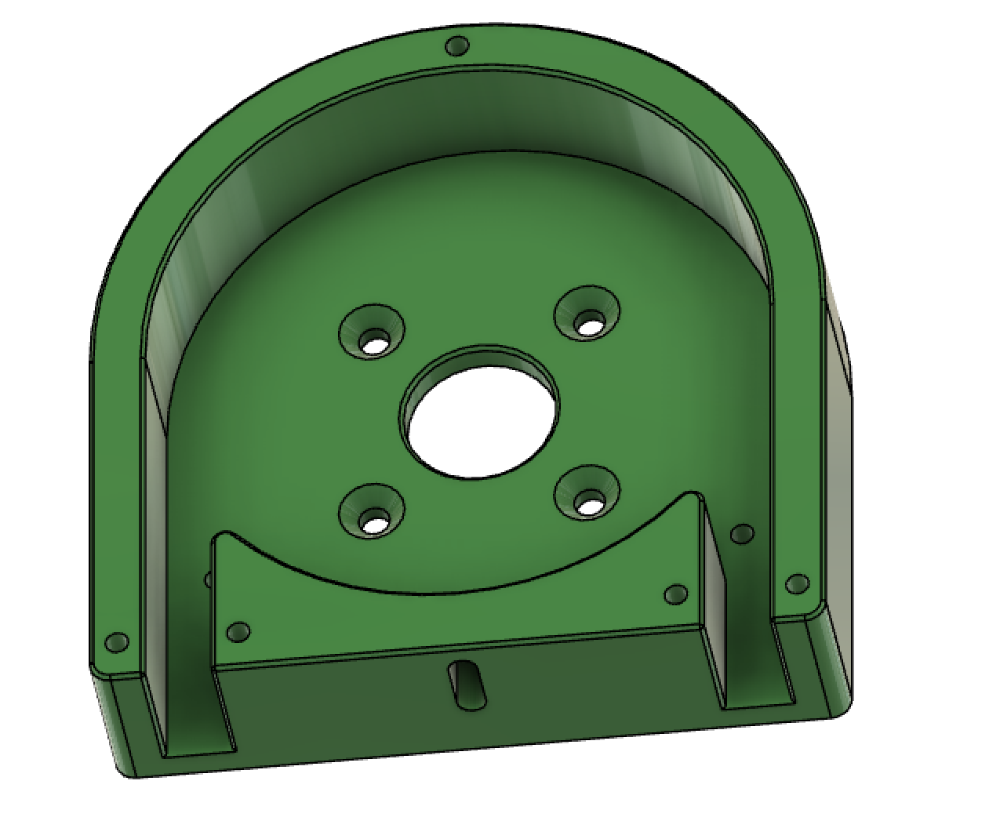
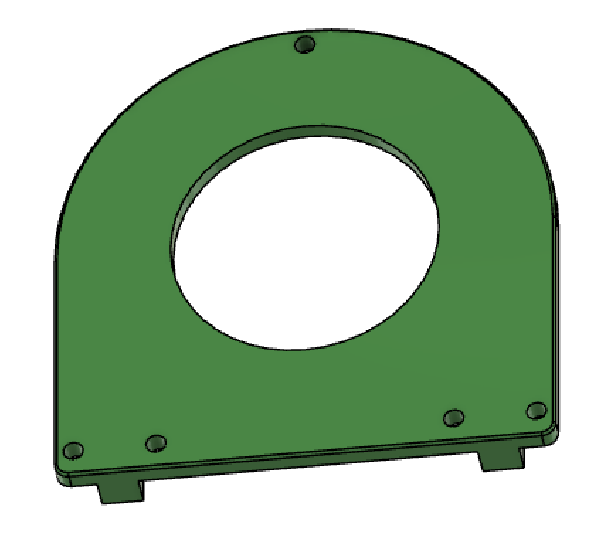
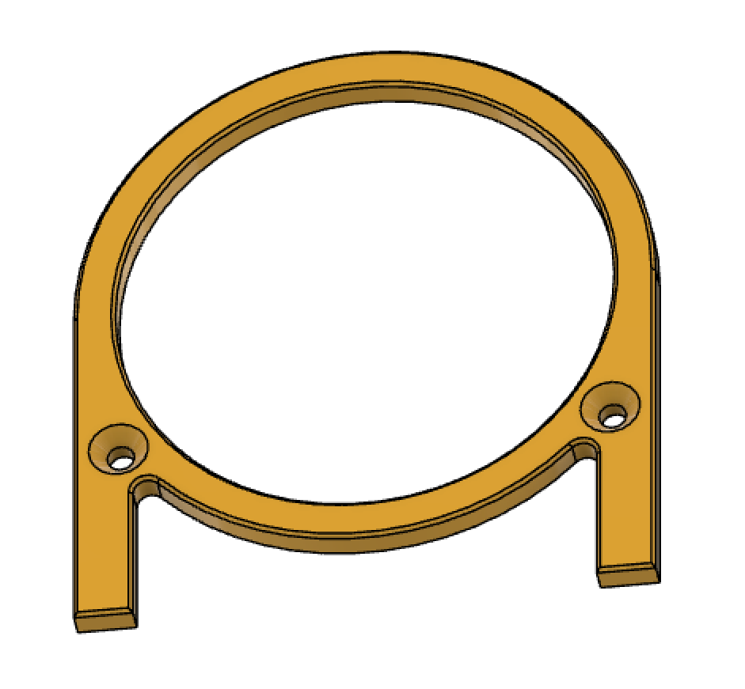
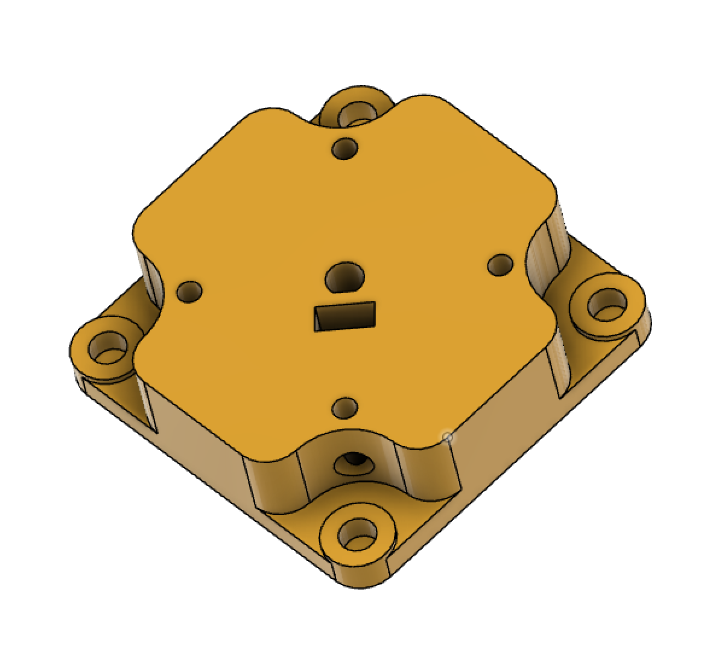
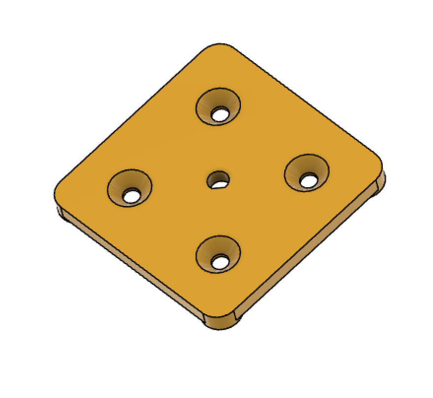
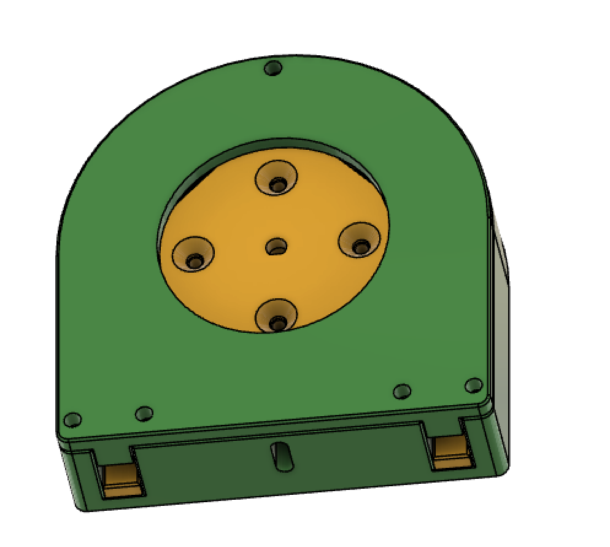
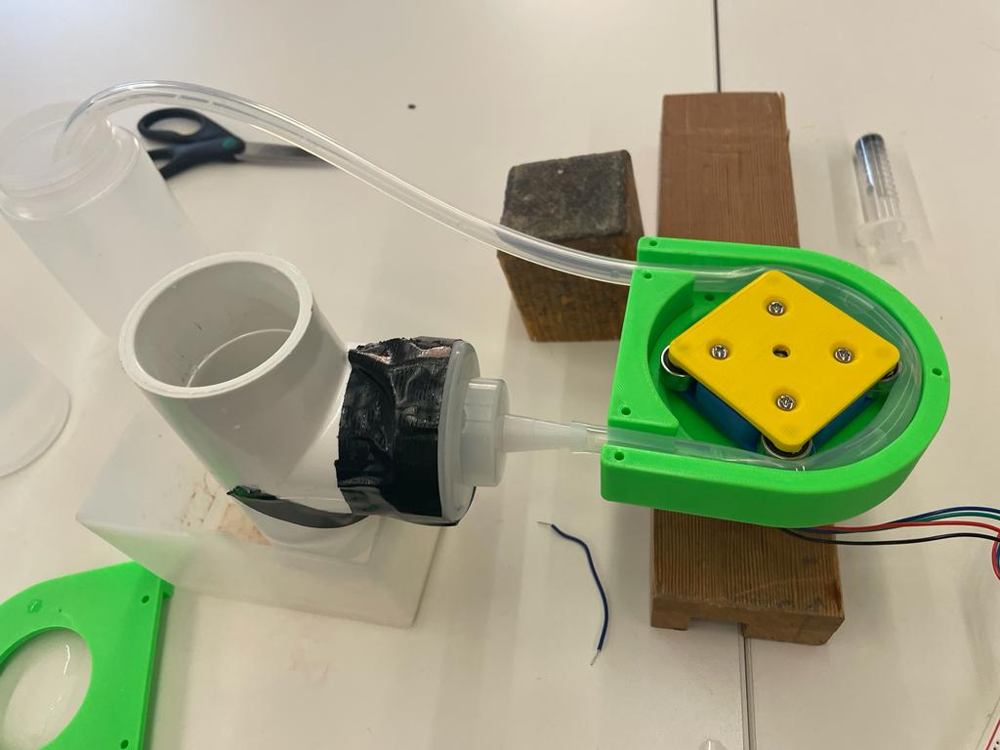
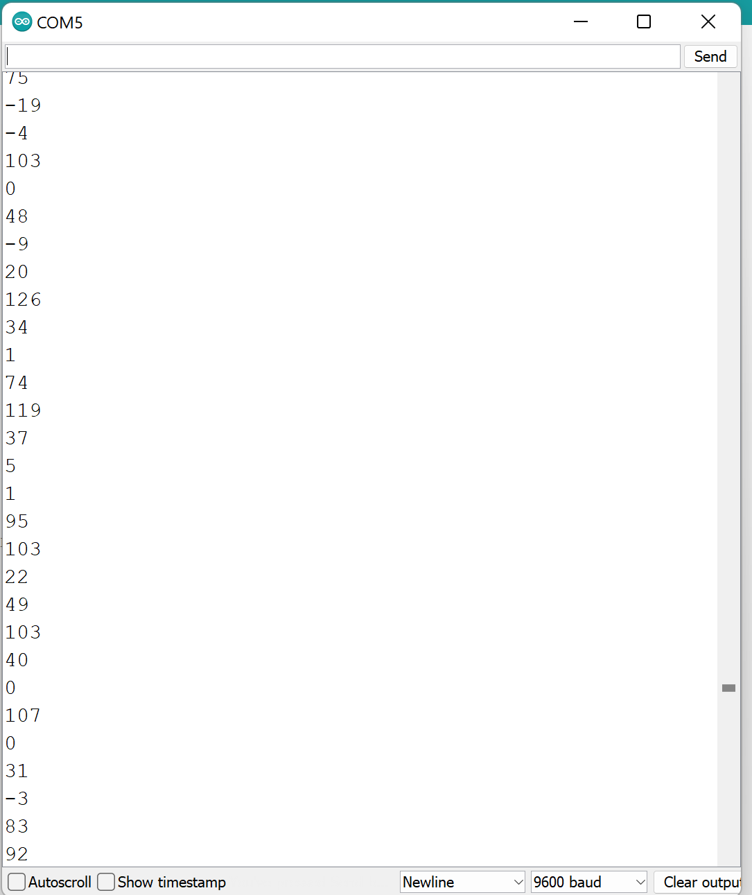

Week 10: Machine Building and End effectors r
<br>
<b> Machine Building </b>
This week we were tasked with using a stepper motor to build a machine. I thought about making a machine with similar movements to that of a 3D printer such as a writing machine but decided that I wanted to continue to explore different water pumps for my Final project. Since I had already looked at centrifugal pump designs I decided this would be a good week to play around with peristaltic pumps.
While peristaltic pumps are traditionally used in medical devices I wanted to test its capabilities in pumping water from a jar. The stepper motor assignment would be the perfect assignment to test discrete pumping measurements based on revolution steps and motor speed.
<u> Making the peristaltic pump </u>
I decided to 3D print the parts I would need for my peristaltic pump. I found [this](https://www.thingiverse.com/thing:5409562) useful tutorial online that came with a fully parameterized systolic pump. This allowed me to change each parameter to fit my design specifications. I changed the motor fit specifications so that it would fit a Nema 17, and added the parameters of the tubing I was using. Below shows a screenshot of the parameters with highlighted columns showing what I changed.
The assembly was fairly straightforward. The only difficulties I encountered were; 1) finding ways to attach the rotary bearings to the Rotor since I was missing the metal part listed in the tutorial. I ended up cutting small pieces of metal tubing and this was sufficient (although the diameter was slightly too small and caused the rotary bearings to move back and forth slightly). 2) I didn’t realize that NEMA-17s used M3 screws so I was attempting to fit generic screws which ended up making the design clunky. Luckily Nathan pointed this out to me so I was able to make the switch.
Here are the final results:
<video width ="300" height="500" autoplay loop muted>
<source src="../10/initial_system.mp4" type="video/mp4" />
</video>
And Here is a breakdown of the different components in CAD
<div class = "center">

</div>
<div class = "center">

</div>
<div class = "center">

</div>
<div class = "center">

</div>
<div class = "center">

</div>
<div class = "center">

</div>
<u>Attaching the stepper motor </u>
After Assembly I realized the rotor bearing diameter was about 1mm too larger for the stepper motor axle. I tried adding Velcro in between to fix this problem but it kept getting caught just made things worse. I decided to reprint this part with the exact dimensions and it was now fitting much better.
I was also worried that the Nema 17 I was using was not getting enough power. I attached a supplementary 9V power source to the Arduino but the motor kept getting “stuck” in that it would just vibrate or jerk forward slightly. I switched this out for a more powerful Nema 17 (higher voltage rating) but when I asked Nathan about this and he said that the problem was that the motor wasn’t being supplied with sufficient current. The Arduino was actually stepping down the current which I had never realized before. In order to fix this I tried connecting the 9V to a breadboard instead and this seemed to work well.
Here is the very basic code I used for the stepper motor (taken from [this](https://docs.arduino.cc/learn/electronics/stepper-motors) tutorial):
<pre><code>
#include <Stepper.h>
const int stepsPerRevolution = 200; // change this to fit the number of steps per revolution
// for your motor
// initialize the stepper library on pins 8 through 11:
Stepper myStepper(stepsPerRevolution, 8, 9, 10, 11);
void setup() {
// set the speed at 50 rpm:
myStepper.setSpeed(50);
// initialize the serial port:
Serial.begin(9600);
}
void loop() {
// step one revolution in one direction:
Serial.println("clockwise");
myStepper.step(stepsPerRevolution);
delay(500);
}
</code></pre>
Coding for step motor
<u>Altering Steps per revolution and speed </u>
My goal was to alter the speed and steps per revolution so that I could achieve two things with my peristaltic pump:
1. Maximum power in terms of pumping the water
2. One revolution would equal a discrete amount of filling of another tank by the pump
However, a huge challenge in my project this week is that, even after I connected the larger stepper motor and got it working, it would get stuck at certain revolutions and speeds. I didn’t understand why this was happening. The only possible explanation I have is that the motor requires a minimum speed to overcome to pressure when pressed against the tubing. This was not a huge setback because I did not care necessarily about how quickly the water was pumped out.
On the other hand the motor would also get jammed when I set the revolution too high. This made way less sense to me and was a huge setback because the maximum steps per revolution that it seemed to be able to handle, 300 steps, was still far below the steps I needed to complete a discrete filling based off my marking on the cup.
<u>Setting up water system </u>
Initially I simply tried putting the tubing in two identical tanks, one filled with water and one empty. However, the pump was not strong enough to draw the water up against gravity (which makes sense given the design) so I had to alter my design as shown below:
<div class = "center">

</div>
The problem with this design is that water will naturally flow from the initial tank regardless of whether the pump is on if the first tank is filled higher than the exit nozzle. The best it can do to remove this effect is fill up the water so that it only just reaches the exit nozzle, but this also means that as soon as too much water is drawn the pump cannot overcome gravity to pump more out. This also makes it really difficult to take meaningful measurements.
<video width ="500" height="300" autoplay loop muted>
<source src="../10/test1.mp4" type="video/mp4" />
</video>
<video width ="500" height="300" autoplay loop muted>
<source src="../10/test2.mp4" type="video/mp4" />
</video>
<u> Adding capacitive sensors </u>
At a minimum, I wanted to have a fully working system so I decided to try and add capacitive sensors that would detect when the water reached the max line and consequentially turn off the pump. Here is the code I used for the capacitor, taking the difference of the high and low reading (from Nathan's site).
<pre><code>
int analog_pin = A3;
int tx_pin = 4;
int read_high;
int read_low;
int diff;
void setup() {
pinMode(tx_pin, OUTPUT); // Pin 4 provides the voltage step
Serial.begin(9600);
}
void loop() {
digitalWrite(tx_pin,HIGH); // Step the voltage high on conductor 1.
read_high = analogRead(analog_pin); // Measure response of conductor 2.
delayMicroseconds(100); // Delay to reach steady state.
digitalWrite(tx_pin,LOW); // Step the voltage to zero on conductor 1.
read_low = analogRead(analog_pin); // Measure response of conductor 2.
diff = read_high - read_low; // desired answer is the difference between high and low.
Serial.println(diff);
}
</code></pre>
However when I tested my capacitor on its own at first I got really weird fluctuating values from negative values to above 200. This made it very difficult to set a boundary capacitor number for my if statement.
<div class = "center">

</div>
Hopefully I can fix this later today so my system is at least working.